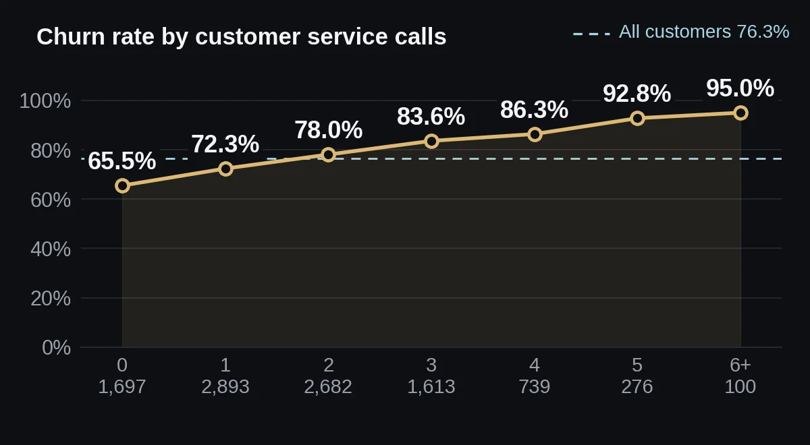
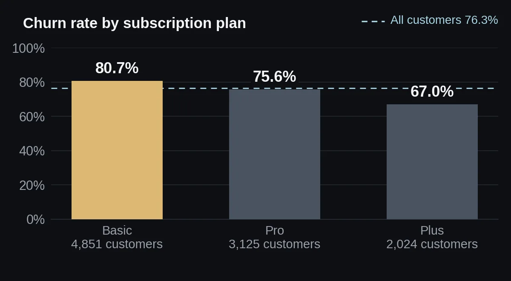

Customer Churn Analysis
I looked for early warning signs of customer churn, and cleaned a messy customer file to get there.
Summary
Flag customers early by login recency and service calls. Gender, age and payment method show no link.
Problem
In this dataset, 76.3% of 10,000 customers have churned. Which customers leave, and what warns us first?
The files contain no brief. The questions are the notebook's own headings: does activity level affect churn, is time since last login a cliff, and do plan, payment method, region, age, gender, service calls and spend matter?
Data
- Source
- TODO for Moaz: say where this dataset comes from; the notebook does not say
- Size
- 10,300 rows and 10 columns. 10,000 unique customers remain after removing 300 duplicate rows.
- Columns
- Customer_ID, Gender, Region, Subscription_Plan, Payment_Method, Age, Days_Since_Last_Login, Customer_Service_Calls, Monthly_Spend, Churn (1 = churned, 0 = retained)
- Quality problems
- 8 spellings of 4 regions and 6 spellings of 3 plans. After removing duplicates: 700 missing payment methods, 995 missing ages and 500 missing spend values. Invalid values: 44 ages (below 5 or above 100, including 10 of exactly 150), 48 negative spend values, 11 spend values of 99,999.99, and 50 negative service call counts.
- Definitions
- TODO for Moaz: explain what Churn means and over what period customers were counted; the files do not say
- Currency
- TODO for Moaz: state the currency of Monthly_Spend; the files give none
Method
- Removed 300 duplicate rows.
- Standardised capitalisation: region from 8 spellings to 4, and plan from 6 spellings to 3.
- Filled 700 missing payment methods with "Unknown".
- Replaced 995 missing and 44 invalid ages with the median age, 33.
- Replaced 500 missing, 48 negative and 11 outlier (99,999.99) spend values with the median, and 50 negative service call counts with the median.
- Grouped customers by login recency: Active (0 to 30 days), At Risk (31 to 90) and Inactive (91 or more), and in 30-day buckets.
- Compared churn across plan, region, gender, payment method, service calls, spend and age, with one chart per question.
- The notebook has no significance tests. I added chi-square tests and t-tests to check whether each gap is real.
What I found
Login recency is the strongest warning
Churn rises steadily from 59.6% for customers who logged in within 30 days to 91.1% for those away 151 days or more. There is no cliff: each 30-day step adds 4 to 9 points, and the climb slows after 120 days. Half of customers (4,956 of 10,000) are Inactive (91 or more days), and 86.2% of them churned. Churned customers last logged in 97.0 days ago on average, against 64.6 for retained ones (Cohen's d = 0.65, the largest effect I found).

Many service calls go with churn
Churn goes from 65.5% for customers with no calls to 95.0% for six or more (100 customers). Customers with 3 or more calls (2,728) churn at 85.7%, against 72.8% for those with 0 to 2 (7,272). Churned customers made 1.93 calls on average, against 1.40 (d = 0.40).

Basic plan customers leave most
Churn is 80.7% on Basic, 75.6% on Pro and 67.0% on Plus (chi-square p < 0.0001, V = 0.12). Average monthly spend follows the plan: 36.92 on Basic, 84.13 on Pro and 154.50 on Plus. Churned customers spend less overall (70.68 against 90.91, d = 0.35). The plan gap holds at every activity level: among Inactive customers, churn is 89.9% on Basic and 79.0% on Plus.

What does not matter
Gender (75.9% to 77.3%, p = 0.81), payment method (74.7% to 77.7%, p = 0.15) and age (33.41 vs 33.44 years, p = 0.91) show no link with churn. Region is statistically significant (72.4% in the East to 79.6% in the South, p < 0.0001) but weak (V = 0.06).
| Question | Result | Test | p-value | Verdict |
|---|---|---|---|---|
| Days since last login, churned vs retained | 97.0 vs 64.6 | Welch t-test Added | p < 0.0001 | Significant Medium or larger (d = 0.65) |
| Service calls, churned vs retained | 1.93 vs 1.40 | Welch t-test Added | p < 0.0001 | Significant Small to medium (d = 0.40) |
| Monthly spend, churned vs retained | 70.68 vs 90.91 | Welch t-test Added | p < 0.0001 | Significant Small to medium (d = 0.35) |
| Subscription plan | 67.0% to 80.7% | Chi-square Added | p < 0.0001 | Significant Moderate (V = 0.12) |
| Region | 72.4% to 79.6% | Chi-square Added | p < 0.0001 | Significant Weak (V = 0.06) |
| Gender | 75.9% to 77.3% | Chi-square Added | p = 0.81 | Not significant |
| Payment method | 74.7% to 77.7% | Chi-square Added | p = 0.15 | Not significant |
| Age, churned vs retained | 33.41 vs 33.44 | Welch t-test Added | p = 0.91 | Not significant |
The base rate is very high. 76.3% of customers churned, and even customers who logged in within 30 days churn at 59.6%. I do not know how churn is defined or over what period, so I would not quote these rates as a benchmark.
Recency may be a result, not a cause. Customers who have already left stop logging in. Without dates I cannot tell which comes first.
Ages 5 to 17. 470 customers aged 5 to 17 remain after cleaning. The notebook's comment says ages were limited to 18 to 100, but the code only removes ages below 5. I would check whether these ages are real.
Filled ages. About 1,039 ages (10% of customers) were replaced with the median. Age does not relate to churn, so this changes little, but it should be stated.
Small print. The notebook's written note gives the churned service-call average as 1.90. The data gives 1.93, which the chart label rounds to 1.9. I use 1.93.
TODO for Moaz: add the payment-methods.jpg image that the notebook loads (it is missing from the files, so the payment donut chart cell fails)
Recommendation
- Build an early-warning list from login recency. Start outreach when a customer passes 30 days without a login, and give priority to those past 90 days. Churn climbs steadily, so the exact threshold is a judgement call to test, not a value from the data.
- Flag customers with 3 or more service calls for a follow-up from the support team. They churn at 85.7%.
- Review the Basic plan experience. It has 80.7% churn across 4,851 customers.
- Do not target by gender or payment method. Neither relates to churn.
What I would do next
- Confirm the churn definition and get dates, then check whether low logins come before churn.
- Fit a logistic regression on recency, service calls, plan and spend to rank the drivers, and test how well it predicts churn on customers held out of the fit.
- Check the 470 customers aged 5 to 17.
- Look at plan and recency together to pick a first target group; Basic customers who are Inactive churn at 89.9%.